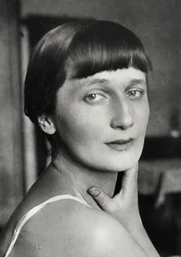
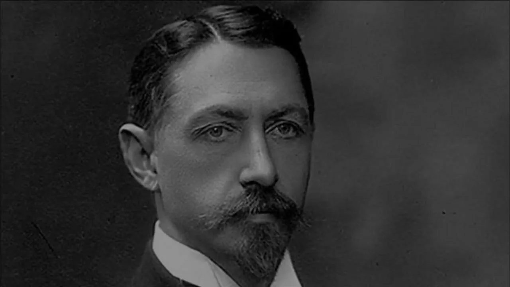
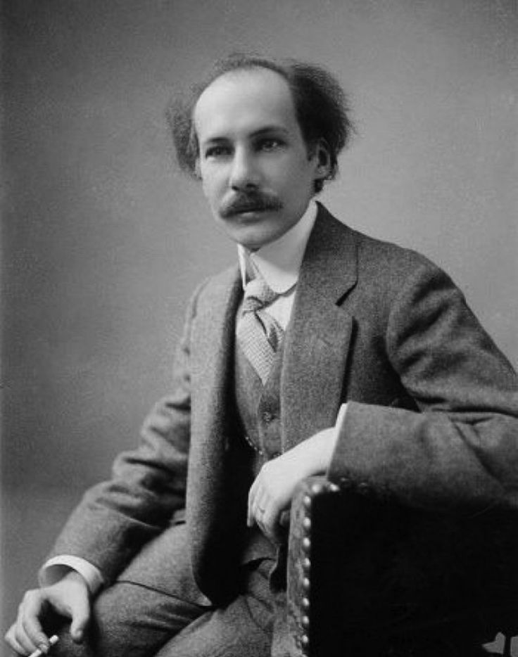
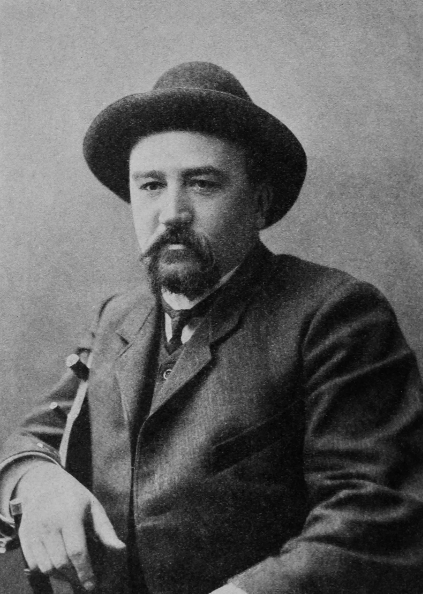
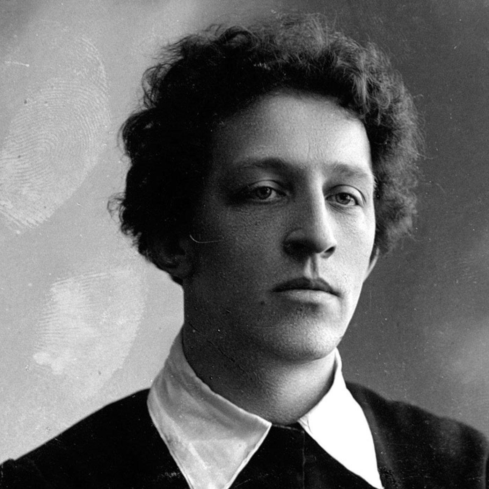
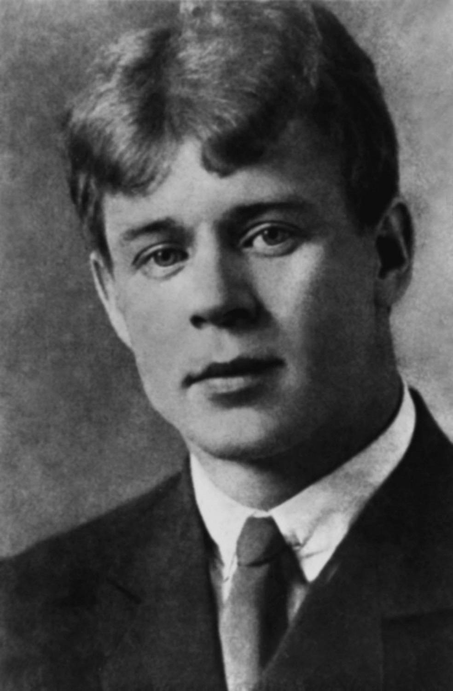
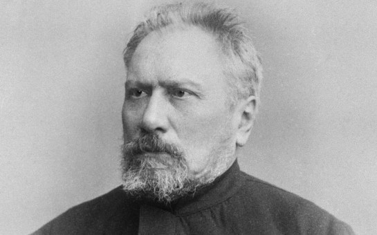
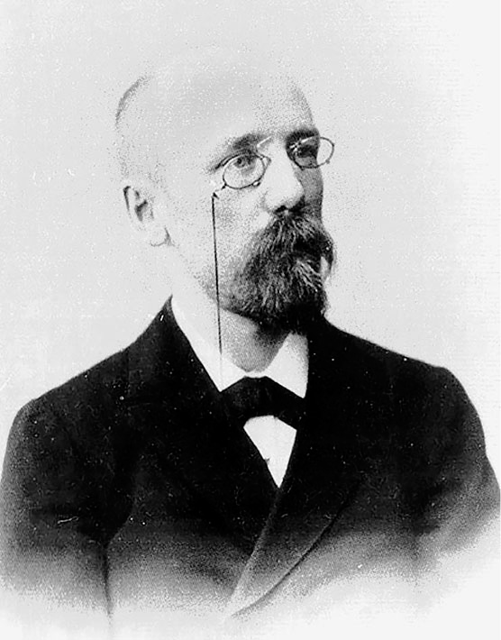

Писатели Серебряного века
Поэты и прозаики, чьё творчество стало воплощением духовно-нравственных ценностей России

Анна Ахматова
1889–1966
Поэзия чести, страдания, любви и несломленного духа

Иван Бунин
1870–1953
Тончайший лирик, мастер «дворянских гнёзд» и памяти о России

Андрей Белый
1880–1934
Символист, искатель духовного преображения и нового человека

Александр Куприн
1870–1938
Сочувствие «маленькому человеку», вера в любовь и доброту

Александр Блок
1880–1921
Поэт Прекрасной Дамы, Россия как стихия и судьба

Сергей Есенин
1895–1925
Голос деревни, любовь к родной земле и живая душа Руси

Николай Лесков
1831–1895
Праведники, народный быт и сокровища русского духа

Фёдор Сологуб
1863–1927
Певец «мелкого беса», исследователь тёмных сторон души

Леонид Андреев
1871–1919
Мастер психологической драмы, певец «бездны» человеческой души